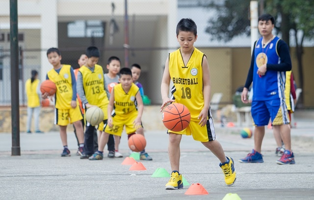

Kĩ Thuật Bóng Rổ

1. Kỹ thuật dẫn bóng
Đặc điểm sử dụng
Trong thi đấu bóng rổ, người ta người sử dụng các kỹ thuật dẫn bóng (cao tay, thấp tay, tại chỗ và di chuyển) để thoát khỏi sự truy cản của đối phương. Trong dẫn bóng cần phải dẫn tốt cả 2 tay, khi dẫn bóng tốc độ dẫn bóng phụ thuộc trước hết vào độ cao bật lại của bóng từ mặt sân và vào góc nghiêng tạo thành đường bay của bóng khi chạm sân và hướng thẳng đứng từ mặt sân. Bóng bật lại càng cao và góc nghiêng càng nhỏ thì tốc độ di chuyển càng lớn. Khi bóng bật lại thấp và gần so với chiều thẳng đứng, vận động viên dẫn bóng chậm và có thể thực hiện dẫn bóng tại chỗ.
Hai gối khuỵu, trọng tâm thấp, thân lao về phía trước và hơi nghiêng về phía có bóng, mắt quan sát tình hình trên sân, bàn tay xòe rộng tự nhiên, cánh tay, cổ tay và các ngón tay thả lỏng tự nhiên.
Khi dẫn bóng
Lấy khuỷu tay làm trụ, bóng nảy lên tới ngang thắt lưng dùng sức cẳng tay, thông qua cổ tay rồi tới các ngón tay ấn bóng xuống. Bóng tiếp xúc đầu tiên ở các ngón tay rồi vào chai tay và các phần lồi của bàn tay, cổ tay, cẳng tay, đưa lên theo bóng, lòng bàn tay không chạm bóng. Điểm rơi của bóng ở phía trước thân mình và ở bên cạnh đường chạy, đồng thời phải lấy người yểm hộ cho bóng.
Khi dẫn bóng thì hướng dẫn bóng do điểm tay tiếp xúc bóng quyết định.
– Nếu dẫn bóng tại chỗ thì diện tiếp xúc ở trên bóng.
– Nếu dẫn bóng di chuyển về phía trước thì diện tiếp xúc ở trên sau bóng.
– Nếu dẫn bóng sang phải thì diện tiếp xúc ở trên bóng bên trái và ngược lại.
Chú ý:
– Khi tiếp xúc, bóng nên ở hai bên người không nên ở phía trước mặt khi di chuyển.
– Khi dẫn bóng không nên nhìn vào bóng mà mắt phải quan sát đồng đội và đối phương.
– Khi dẫn bóng phải có ý thức bảo vệ bóng, tay không có bóng cần phải có ý thức ngăn cản đối phương vào phá, cướp bóng.
Sai lầm thường mắc và phương pháp sửa chữa
Sai lầm: Dẫn bóng không theo được ý định.
Phương pháp sửa chữa: Khuỷu tay ít di chuyển và để cố định bên mình. Chủ động tiếp xúc tay vào bóng đúng vị trí.
Sai lầm: Khi dẫn bóng thường bị mất bóng.
Phương pháp sửa chữa: Tập dẫn bóng bằng cả 2 tay, thân trên hơi quay về phía có bóng, dẫn bóng bằng tay xa người phòng thủ.
Sai lầm: Khi dẫn bóng cổ tay quá cứng.
Phương pháp sửa chữa: Tập dẫn bóng để cổ tay thả lỏng tự nhiên, tập đứng tại chỗ dẫn bóng vào tường.
Xem thêm >> các kỹ thuật chuyền bóng trong bóng rổ
2. Dẫn bóng thoát đối phương
2.1. Dẫn bóng thay đổi tốc độ
Để thay đổi tốc độ dẫn bóng một cách bất ngờ, các vận động viên phải chạy để tách người phòng thủ của đối phương. Tốc độ dẫn bóng phụ thuộc trước hết vào độ bật lại của bóng từ mặt sân và vào góc nghiêng tạo thành giữa đường bay của bóng khi chạm sân
và hướng thẳng đứng từ mặt sân. Bóng bật lại càng cao và góc nghiêng càng nhỏ thì tốc độ di chuyển càng lớn. Khi bóng bật lại thấp và gần so với chiều thẳng đứng, thì cầu thủ dẫn bóng chậm và có thể thực hiện dẫn bóng tại chỗ.
2.2. Dẫn bóng đổi hướng
Đặc điểm sử dụng
Sử dụng động tác này chủ yếu là để thoát khỏi sự kèm chặt của đối phương và thực hiện tấn công ném rổ.
Phân tích kỹ thuật
Dẫn bóng khi đổi hướng thì bàn tay đặt lên các điểm khác nhau ở mặt bên của bóng và duỗi thẳng tay theo hướng cần thiết. Cũng thực hiện như trên để thay đổi độ nảy của bóng, để xoay người và để chuyển bóng.
2.3. Dẫn bóng qua người phòng thủ
Đặc điểm sử dụng
Kỹ thuật dẫn bóng này thường sử dụng để dẫn bóng qua người phòng thủ, thoát khỏi sự kèm cặp của đối phương, dẫn bóng đột phá qua người phòng thủ để lên rổ.
Phân tích kỹ thuật
Khi dẫn bóng người hạ thấp hơi xoay về hướng có bóng, mắt quan sát trên sân. Khi dẫn vượt qua người phòng thủ, trọng tâm thấp, chân phía trong sát với chướng ngại vật bước chếch trước đồng thời quay lưng lại để bảo vệ bóng, bóng được chuyền ra tay xa
người phòng thủ, thân người và vai xoay nghiêng về tay dẫn, và tiếp tục dẫn bóng.
Sai lầm thường mắc và phương pháp sửa chữa
Sai lầm: Khi dẫn bóng thường bị đói phương phá mất bóng.
Phương pháp sửa chữa: Khi dẫn bóng phải xoay lưng về phía người phòng thủ để bảo vệ bóng. Bóng phải chuyền ra tay xa người phòng thủ.
Sai lầm: Khi dẫn bóng không điều khiển được bóng.
Phương pháp sửa chữa: Tập dẫn bóng mắt không nhìn bóng, phải quan sát tình hình trên sân.
Sai lầm: Phối hợp động tác không nhịp nhàng, tốc độ di chuyển chậm, thường phạm luật.
Phương pháp sửa chữa: Tập động tác dẫn bóng vượt chướng ngại vật chậm, sau khi thành thạo thì tăng dần tốc độ di chuyển.
Trong thi đấu bóng rổ, để dẫn bóng thoát khỏi đối phương, các đối thủ còn hay sử dụng phương pháp thoát khỏi đối phương bằng cách chuyền bóng từ tay này sang tay kia, chuyền bóng kín, dẫn bóng đổi tay qua sau lưng, dẫn bóng đổi tay qua giữa
hai chân. Cách thực hiện khi dẫn bóng: – Khi đang cầm bóng trước mặt không có đối phương kèm thì dẫn bóng vào ném rổ. – Khi cầm bóng bị đối phương kèm không thể chuyền bóng hoặc ném rổ, lúc này phải dùng động tác dẫn bóng di chuyển đến vị trí
khác tạo điều kiện chuyền bóng hoặc ném rổ. – Khi đối phương dùng chiến thuật kèm người chặt muốn đột phá phải dùng động tác dẫn bóng. – Khi dùng chiến thuật yểm hộ, phối hợp phải dùng động tác dẫn bóng.